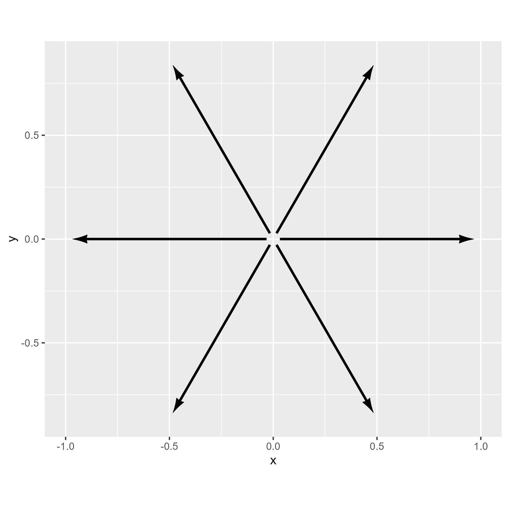
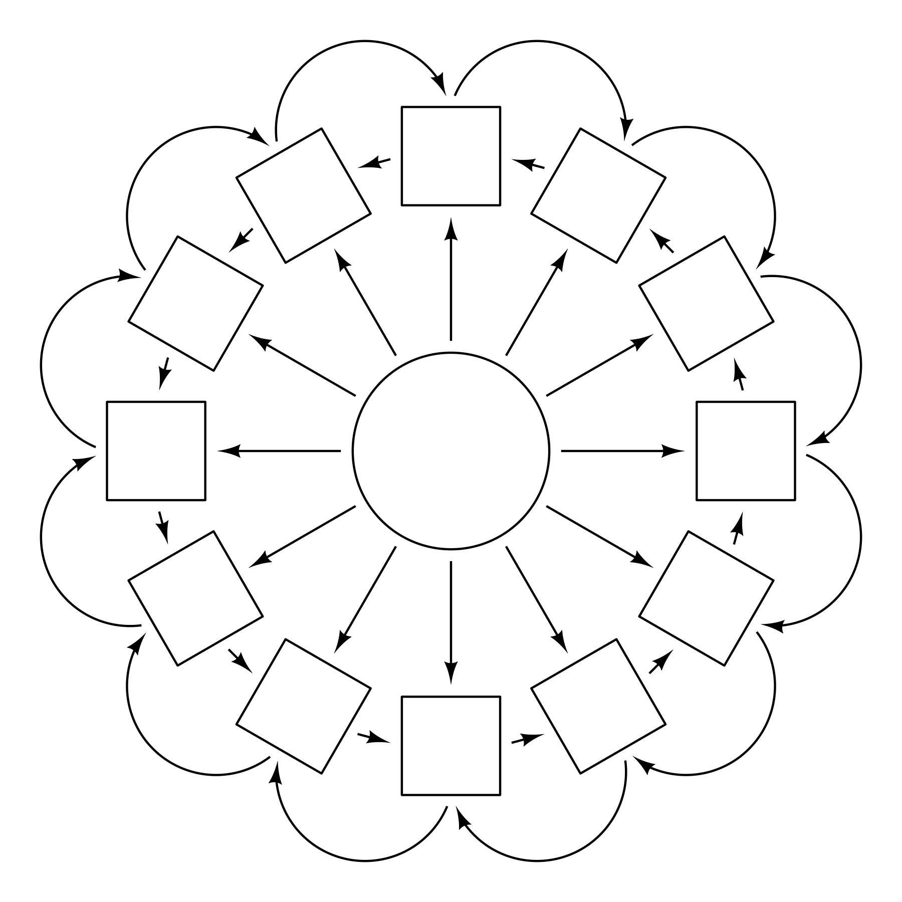

Purpose
The arrowheadr package allows one to create custom arrowheads that can be used with the ggarrow package.
Installation
The arrowheadr package can be installed via CRAN:
install.packages("arrowheadr")The development version of arrowheadr can be installed by running this code:
install.packages("arrowheadr", repos = c('https://wjschne.r-universe.dev'))Example
The ggarrow package makes it possible to create a wide variety of arrows. The arrowheadr package makes it easy to create custom arrowheads.
tibble(
theta = seq(0, 300, 60) * pi / 180,
x = cos(theta),
y = sin(theta)
) |>
ggplot(aes(x, y)) +
coord_equal() +
geom_arrow_segment(aes(
xend = x,
yend = y,
x = 0,
y = 0
),
arrow_head = arrow_head_deltoid(),
resect = 2)
Figure 1: Using arrowheadr with ggarrow
The ggdiagram package also uses arrowheadr and ggarrow under the hood.
# Make a circle
A <- ob_circle(center = ob_point(0, 0), radius = 1)
# Make angles evenly spaced around a circle
theta <- degree(seq(0, 330, 30))
# Make ring of points around the circle
p <- ob_point() |>
place(from = A, where = theta, sep = 2)
# Make rotated squares
B <- ob_rectangle(center = p, angle = theta)
ggdiagram() +
A +
B +
# Arrows from A to B
connect(A,
B,
resect = 2) +
# Straight arrows from B to adjacent B
connect(B@north,
B[c(2:12, 1)]@south,
resect = 2) +
# Arc arrows from B to adjacent B
connect(B[c(2:12, 1)]@east,
B@east,
arc_bend = -1,
resect = 2)
Figure 2: Using arrowheadr with ggdiagram